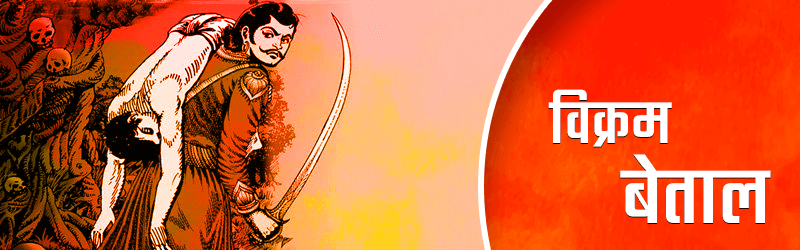
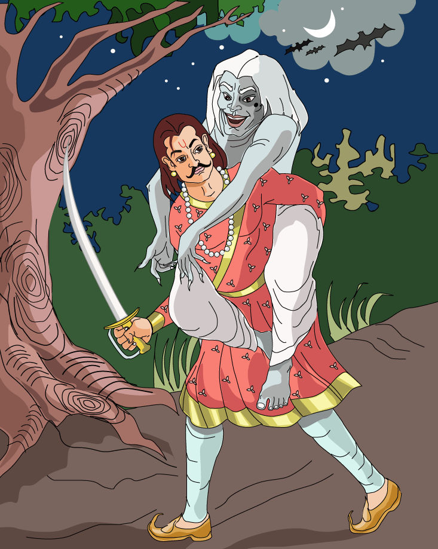
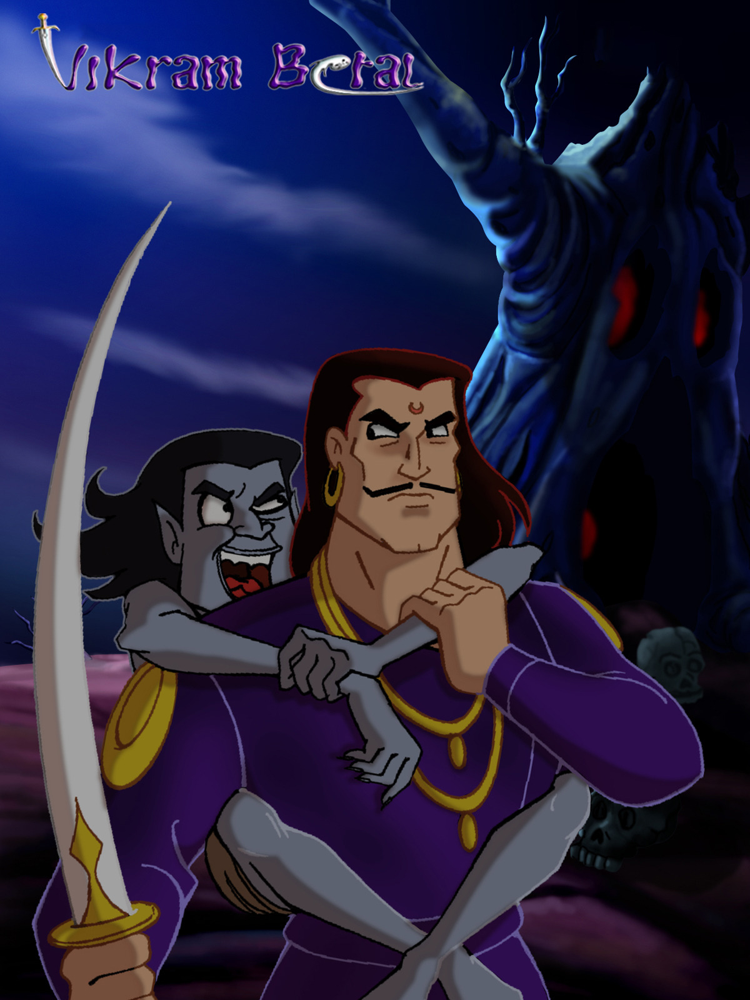
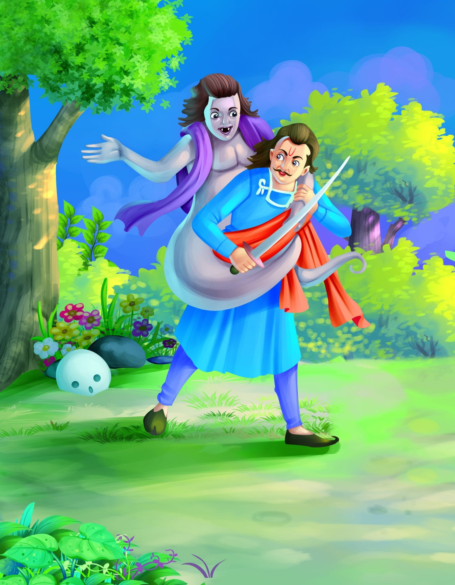
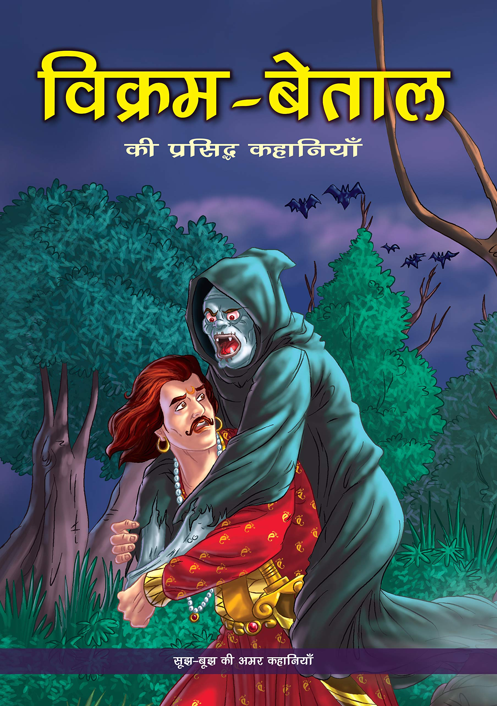

According to folklore, the King of Ujjain, Vikramaditya or Vikram, is said to have promised to bring a ghost named Betal to a sage to help him complete his prayers. Following Vikram’s encounter with Betal, the ghost agrees to accompany him on one condition. During the journey, Betal will tell King Vikram a story and will ask him a question at the end. If Vikram gave the right answer, then Betal will fly back to his tree. If Vikram knowingly decided to stay quiet, then he will end up losing his life, and only if Vikram really doesn’t know the answer to Betal’s question, he can take Betal to the sage. And thus began the journey of Vikram and Betal.

It all started with a promise from King Vikram to ghost Betal to go on a journey to finish his prayers. During their expedition, Betal insisted on narrating a story and asking a question from Vikram at the end of it. But he added some conditions to it. First, if Vikram answered correctly, Betal would fly back to the place they started from. Second, if Vikram chooses not to answer, his time will end. Lastly, if Vikram is not aware of what the answer is, then will stay on the course and Betal will narrate a new story.
Collection of Popular Vikram Betal Stories

Vikram Betal Story 1: Who's committed the sin (पाप किसका था)?

Vikram Betal Story 2: Who's the husband (पति कौन हुआ)?
Vikram Betal Story 3: Whose sacrifice is bigger (किसका त्याग बड़ा)?

Vikram Betal Story 4: Who should be the groom (वर कौन हुआ)?

Vikram Betal Story 5: Who are husband and wife (पति पत्नी कौन)?